Project #3
Asset Management
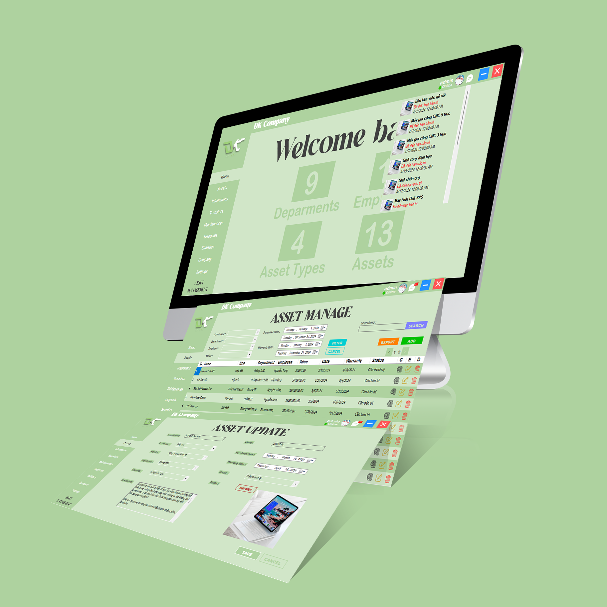
#WinformC# #SQL #UIUXDesign
Project Overview:
Developed an Asset Management system to track and manage company assets.
Software Used:
- Primary Tools: WinForms (C#), SQL
Key Functionalities:
- Asset Tracking: Monitor the status, location, and details of company assets.
- Inventory Management: Manage asset inventory, including adding, updating, and deleting asset records.
- Reporting: Generate detailed reports on asset utilization, maintenance schedules, and asset history.
- Search and Filter: Implement robust search and filter capabilities to quickly find specific assets.
- Notification System: Set up alerts and notifications for maintenance, asset expiry, or any important updates.
Skills Demonstrated:
- Software Development: Built a robust desktop application using WinForms in C#.
- Database Management: Designed and implemented a SQL database for efficient asset tracking.
- Data Integration: Integrated the application with the SQL database for seamless data handling.
- User Interface Design: Created a user-friendly interface for easy navigation and asset management.
- more -
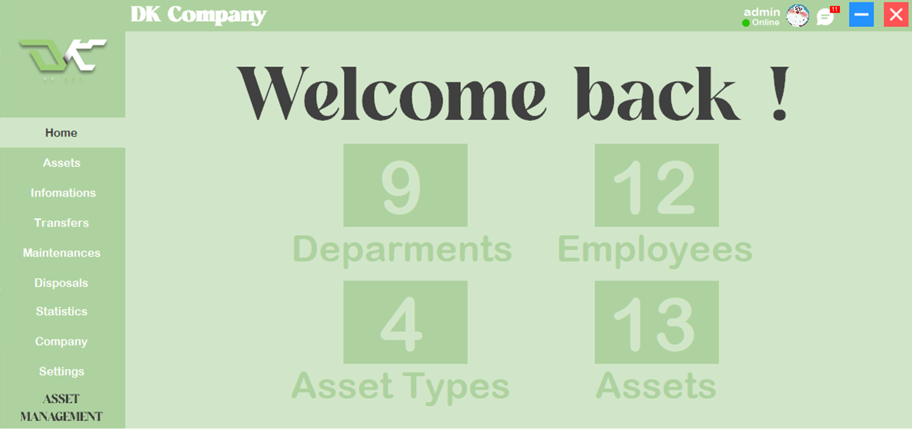
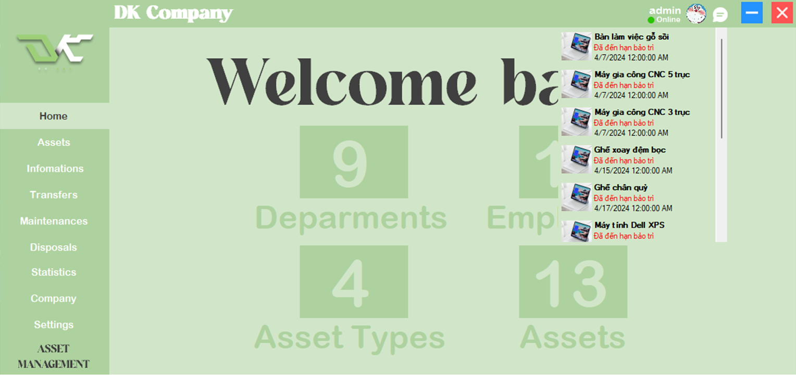
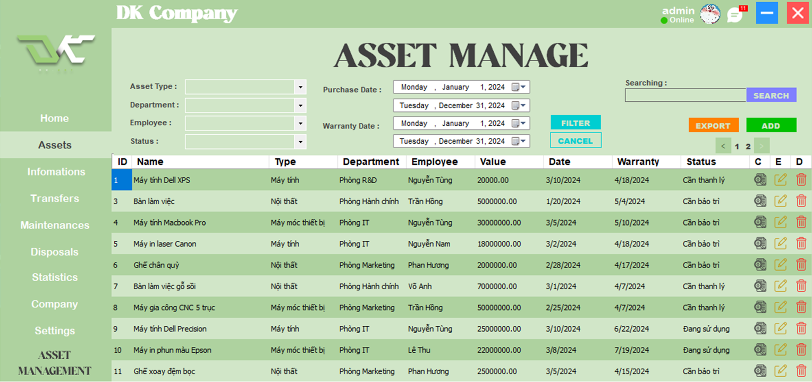
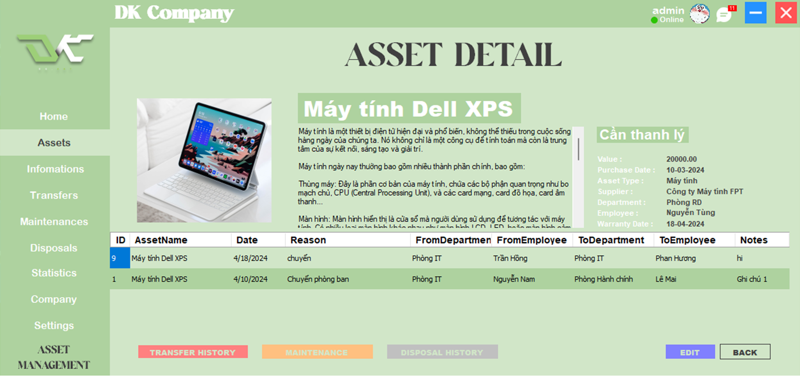
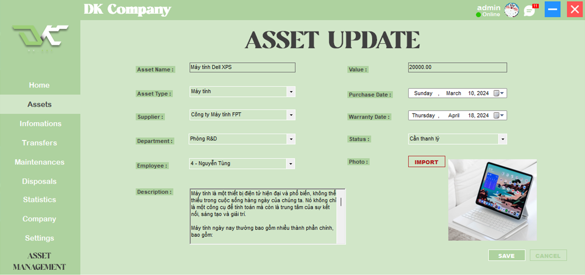
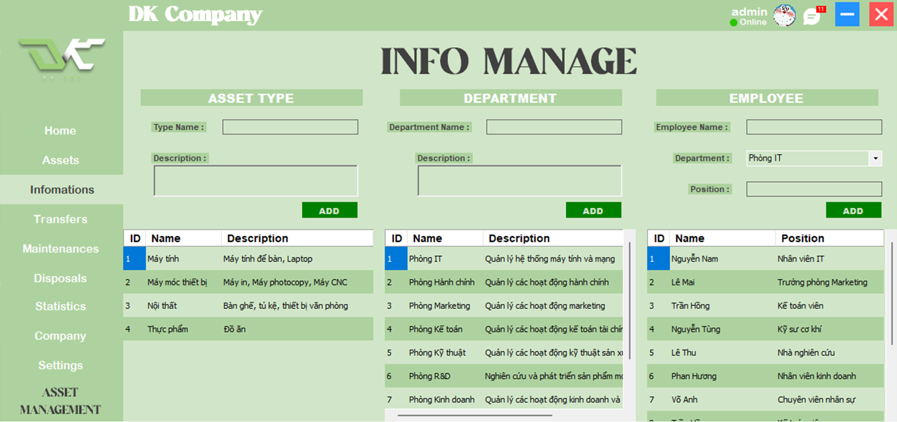
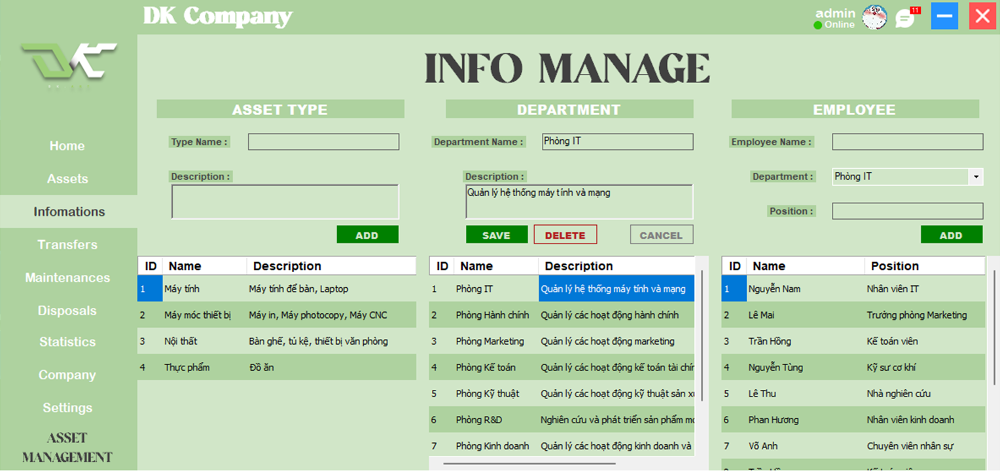
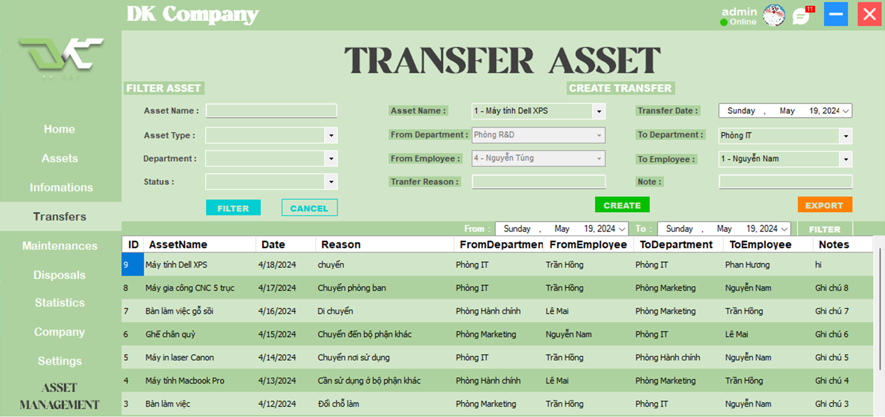
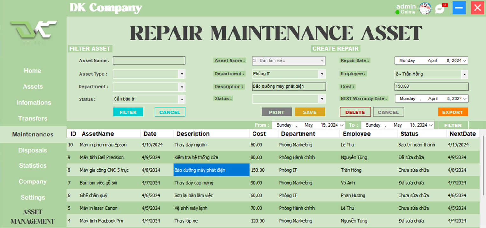
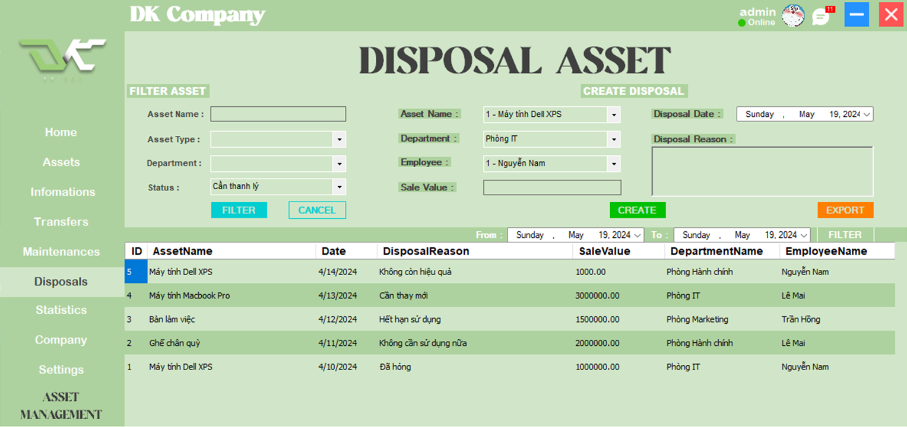
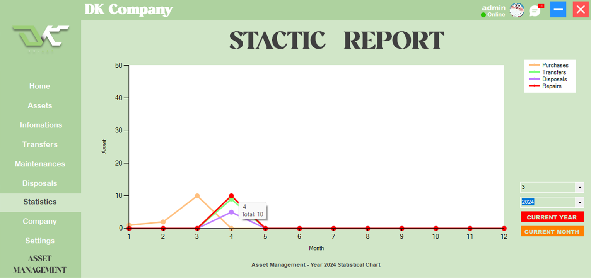
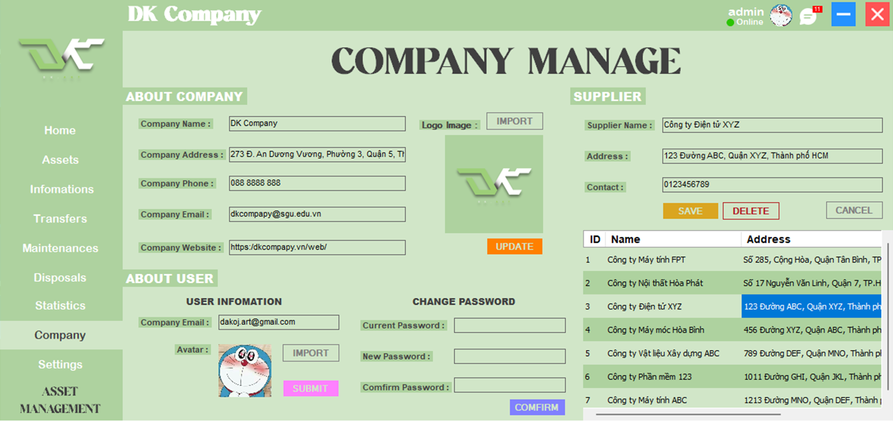
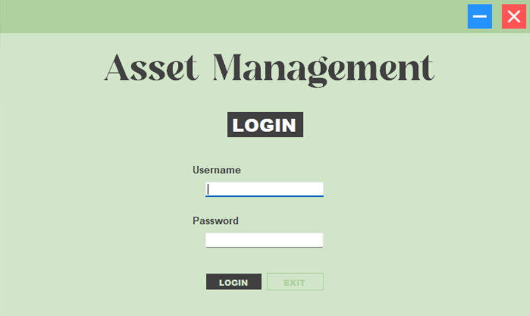